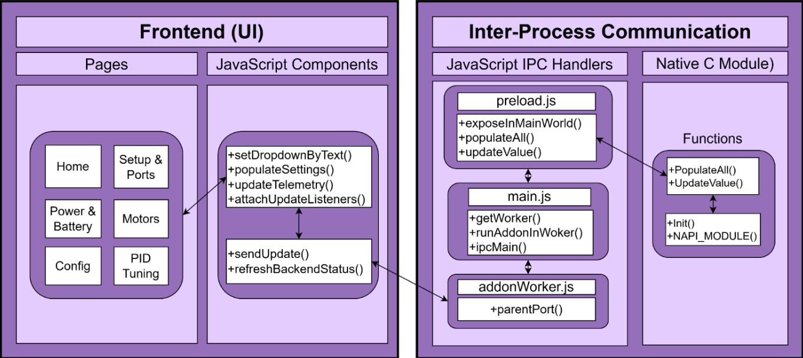
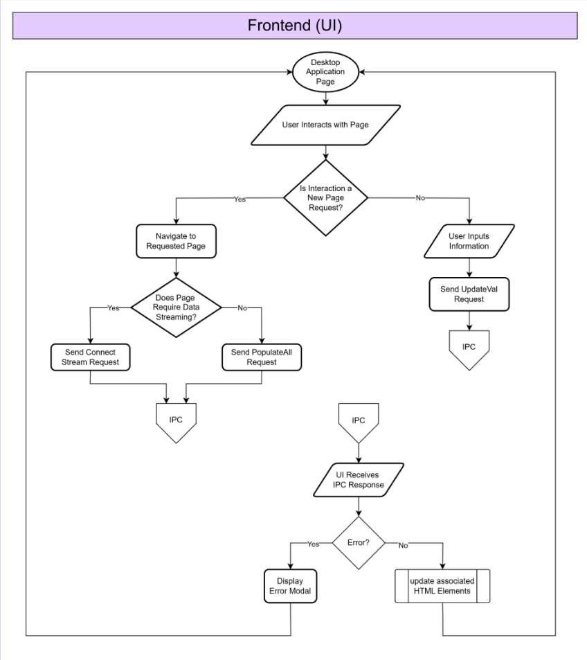

Desktop Application Setup
Assumptions / Expectations
You do not need to have prior coding experience to implement and use OSCAR Ground Station. This documentation will either provide you with all the information you need to get started, or it will direct you to helpful external resources if you need more assistance or background. While prior experience or exposure to web development concepts and communication protocols is helpful, it is by no means expected.
Environment & Project Setup
Electron Project Initialization
What is Electron?
Electron is the development framework under which OSCAR Ground Station was designed. Electron acts as a wrapper layer for web applications using a Node.js environment. Combining Chromium and Node.js, Electron allows the desktop application to be packaged and built into a single binary file.
Why Electron?
Electron was chosen as the framework for OSCAR Ground Station because it is built upon a web development environment, which has a less steep learning curve than other framework options. People often have more familiarity with, or at least more exposure to, web development concepts than other desktop application development frameworks. These web development technologies also have ample documentation available to learn and grow.
Other Resources
Electron has a tutorial for setting up your own project here. An in-depth tutorial specific to the OSCAR Ground Station application is provided in this document for simplicity.
Minimal background with web development or Node.js is expected. However, if you would like to know more, we recommend these resources:
Tools Required
- Code Editor
- We recommend Visual Studio Code, but it is up to your preference.
- Terminal / Command Line
- Windows: Command Prompt, Powershell, Git Bash, etc.
- Git and GitHub
- If you do not already have a GitHub account, you can create one here.
- If you do not already have Git installed on your machine, install Git.
- Node.js and npm
- Electron
How to Setup the Electron Project
First, you need to ensure you have node.js. You can download node.js / npm for your machine's OS and architecture here.
Next, you should verify your installation in your terminal to ensure it installed correctly:
Now you are ready to initialize your project. We've included instructions here for OSCAR specifically, but additional relevant npm documentation can be found here.
First, create a new directory for your project and navigate into it:
Then, initialize your npm project:
This will start a command line questionnaire to help you set up your package.json file. You can press enter to select the default for each question, but make sure to set the entry point to "main.js".
Once you complete the init process, a package.json file will be generated and placed in your current directory. Your package.json file is essentially a manifest of your project that includes the packages / applications it depends on, source control, and metadata.
To install packages into your project, you can use the following command:
You can add flags to the npm install command to specify the type of dependency you want to install. "--save" will add the package as a dependency in your package.json file. "--save-dev" will add the package as a development dependency. For example:
For OSCAR Ground Station, you will need to install Electron as a development dependency:
The main.js file will be the entry point for your Electron application. We created it when we initialized the project. It controls the main process, which runs in a Node.js environment, and is responsible for the application life cycle, displaying native interfaces, performing privileged operations, and managing renderer processes.
Add "electron ." to the start command in the scripts field of your package.json in order to run the main.js file. For example:
"name": "my-electron-app",
"version": "1.0.0",
"description": "Hello World!",
"main": "main.js",
"scripts": {
"start": "electron .",
"test": "echo \"Error: no test specified\" && exit 1"
},
"author": "Jane Doe",
"license": "MIT",
"devDependencies": {
"electron": "23.1.3"
}
If you have not already done so, you should create a file called "index.html". This file describes the page that the application will open up to. Its contents should look something like this (for now - you will update it later):
<html>
<head>
<meta charset="UTF-8"/>
<meta
http-equiv="Content-Security-Policy"
content="default-src 'self'; script-src 'self'"
/>
<meta
http-equiv="X-Content-Security-Policy"
content="default-src 'self'; script-src 'self'"
/>
<title>Hello from Electron renderer!</title>
</head>
<body>
<h1>Hello from Electron renderer!</h1>
<p>👋</p>
</body>
</html>
Now that you have your first webpage, you will need to update your main.js to look like this:
const win = new BrowserWindow({
width: 800,
height: 600,
webPreferences: {
nodeIntegration: true
}
})
win.loadFile('index.html')
}
createWindow()
})
The red section imports two modules: app and BrowserWindow using CommonJS module syntax. app controls the application lifecycle, and BrowserWindow creates and manages app windows.
The green section defines the createWindow function, which loads your webpage (index.html) into a new BrowserWindow instance.
The blue section waits for the application to be ready before creating it.
Project Structure & Architecture
Directory Layout
The directory structure for OSCAR Ground Station is comprised of the following folders:
- OSCAR-app/
- build/
- Contains the compiled serial addon C node.
- Communication/
- Contains the C module for USB Communication.
- Components/
- Contains all javaScript files.
- HTML/
- Contains all HTML files
- images/
- Contains the images embedded in the application.
- models/
- Contains the 3D model, and textures for the model, found in the textures/ folder.
- node_modules/
- This folder serves as a container for all of your external dependencies.
- Styles/
- Contains the CSS files for your project.
- binding.gyp
- This is an important file that defines the paths to important libraries on your local machine. This is necessary for the Electron application to bind to the Native C Module.
- package-lock.json
- This file ensures that dependencies between machines are consistent. It is similar to package.json, but contains more detail.
- package.json
- This is the official manifest for the project, defining the name, version, dependencies, and more.
User Interface Architecture
UI Framework
The OSCAR Ground Station user interface is built using standard web technologies: HTML, CSS, and JavaScript. These technologies are executed within the Electron rendered process, which functions similarly to a traditional web browser environment.
HTML is used to define the structure and content of each page while CSS is responsible for styling and layout. JavaScript handles the dynamic behavior, even handling, and communication with the backend. This approach allows for a modular and flexible UI while leveraging widely understood and well-documented technologies.
Since Electron integrates with Chromium, the application can use modern JavaScript features and browser APIs without concern for cross-browser compatibility. This simplifies the development of the application and enables a more streamlined implementation of interactive UI components.
Theming & Design Principles
The UI follows a consistent theming strategy to ensure clarity, usability, and visual cohesion across all pages. A centralized color palette and shared styling rules are defined in global CSS files, allowing all components to maintain a uniform appearance.
Key design principles include:
- Consistency: Reusable styles and standardized components are used throughout the application to create a predictable user experience.
- Readability: Clear typography, spacing, and contrast are prioritized to ensure information is easy to understand.
- Responsiveness: Layouts are designed to adapt to different window sizes without breaking structure or usability.
- Separation of concerns: Styling is kept within CSS, structure within HTML, and logic within JavaScript to improve maintainability.
This approach ensures that updates to the UI can be made efficiently without introducing inconsistencies.

Layout Structure
The overall layout of the application is organized into clearly defined sections to improve usability and navigation. Each page typically consists of:
- A header and title section that identifies the current page.
- A content area that contains forms, telemetry data, and visual components.
- Grouped configuration panels that organize related settings together.
The layout relies primarily on CSS techniques such as flexbox and grid to align elements and manage spacing. This allows for a structured and scalable design that can accommodate additional UI elements as new features are introduced. Containers and layout classes are reused across multiple pages to maintain consistency and reduce redundant styling code.

Component Reusing
To improve maintainability and scalability, the UI is built using reusable components and patterns rather than duplicating code for each page.
Common UI elements include but are not limited to:
- Input fields
- Dropdown menus
- Configuration panels
- Telemetry display fields
These are designed to follow consistent HTML structures and CSS classes. This allows the same styling and behavior to be applied to different parts of the application.
Additionally, JavaScript logic is written to operate on groups of elements using shared attributes. This eliminates the need to write custom update logic for each individual field and allows new UI elements to be added with minimal additional code. By emphasizing reusable components and generic update mechanisms, the UI remains easy to extend and reduces the risk of introducing bugs when new features are implemented.
USB Communication & Data Flow
Overview
OSCAR Ground Station communicates with the flight controller over USB serial. Commands are sent from the PC to the flight controller, and responses or streamed telemetry data are returned. This communication is handled by a Native C Module that interfaces with the serial port, bridged into the Electron application via Node-API (NAPI) and Electron's IPC system.
Communication Flow & Diagram
Command Transmission Flow (PC → Flight Controller)
When a user submits a value or triggers a command from the UI, the following sequence occurs:
- The frontend JavaScript calls an exposed IPC function via the preload bridge.
- The IPC message is received in main.js and forwarded to the addon worker.
- The native C module packages the command into a structured packet and transmits it over the serial port to the flight controller.
Response Transmission Flow (Flight Controller → PC)
When the flight controller sends data back to the PC:
- The native C module reads incoming bytes from the serial port.
- It validates the packet using CRC and parses the response payload.
- The result is sent back through the worker to main.js via IPC.
- main.js forwards the data to the renderer process, where the frontend updates the relevant UI elements.
Flow Diagram

Native C Module
Overview
The Native C Module is a compiled Node.js addon written in C. It is responsible for all low-level serial communication between the desktop application and the flight controller. It is built using node-gyp and exposes its functionality to JavaScript through the Node-API (NAPI) interface.
High-Level Responsibilities
- Discovering available serial ports and performing a handshake to identify the correct device.
- Packaging outgoing commands into structured packets with headers, payloads, and CRC checksums.
- Transmitting commands to the flight controller and waiting for acknowledgment responses.
- Receiving and validating incoming packets from the flight controller.
- Streaming real-time telemetry data to the JavaScript layer.
- Handling communication errors and retrying failed transmissions.
Node-API Integration
The module integrates with Node.js using the Node-API (NAPI) layer, which provides a stable ABI (Application Binary Interface) between the C code and the JavaScript runtime. Functions are registered and exported using NAPI_MODULE, allowing them to be called from JavaScript as though they were native JavaScript functions.
Command Mapping
Each user-facing action in the UI corresponds to a specific command ID that the C module knows how to encode. A command map is maintained in the C module that associates logical command names with their corresponding numeric identifiers, expected payload structures, and response formats.
Packet Structure
Outgoing packets follow a defined structure to ensure reliable interpretation by the flight controller. A typical packet consists of:
- A start-of-frame byte or header identifier.
- A command ID byte.
- A payload of fixed or variable length.
- A CRC checksum for error detection.
CRC Validation
All packets include a CRC (Cyclic Redundancy Check) value computed over the packet contents. When a packet is received, the C module recomputes the CRC and compares it against the received value. Packets that fail CRC validation are discarded and may trigger a retry or error response.
Port Discovery & Handshake
On initialization, the C module enumerates available serial ports on the machine. It then sends a handshake packet to each candidate port and waits for a known response from the flight controller. The first port that responds with the expected handshake acknowledgment is selected for communication.
Command Execution Flow
When a command is issued from JavaScript:
- The NAPI binding receives the command name and parameter values.
- The command is looked up in the command map and encoded into a packet.
- The packet is written to the serial port.
- The module waits for an acknowledgment response within a defined timeout window.
- The result is returned to the JavaScript caller as a resolved or rejected promise.
Reliable Communication (Retries)
To handle intermittent communication failures, the C module implements a retry mechanism. If a command does not receive an acknowledgment within the timeout period, it will be retransmitted up to a configurable number of times before the operation is declared a failure and an error is surfaced to the JavaScript layer.
Error Handling
Errors detected at the C level — such as port disconnection, CRC failures, timeouts, or invalid responses — are propagated back through the NAPI layer as JavaScript exceptions or rejected promises. These are then caught in the JavaScript IPC handlers and surfaced to the UI via error modals.
Preload & IPC Bridge
Inter-Process Communication
Electron separates its execution into two distinct process types: the main process and the renderer process. The main process runs in a full Node.js environment and has access to native system resources. The renderer process runs in a sandboxed Chromium environment and handles all UI rendering. Because of this separation, they cannot communicate directly — instead, they use Electron's built-in IPC (Inter-Process Communication) system.
ipcMain
ipcMain is the IPC module used in the main process. It listens for messages sent from the renderer and handles them, optionally sending a response back. It is registered in main.js and acts as the bridge between the UI and the native C addon.
ipcRenderer
ipcRenderer is the IPC module available in the renderer process. However, to maintain security, it is not exposed directly to the renderer. Instead, it is accessed through a preload script that selectively exposes safe functions to the frontend.
IPC Setup in Electron
To enable IPC communication in your Electron project, you need to configure the BrowserWindow to use a preload script. This is done in main.js when creating the window:
width: 800,
height: 600,
webPreferences: {
preload: path.join(__dirname, 'preload.js'),
contextIsolation: true,
nodeIntegration: false
}
});
Making the USB Calls in JavaScript
The preload script (preload.js) uses contextBridge to safely expose specific IPC functions to the renderer. This allows the frontend JavaScript to trigger native USB operations without having direct access to Node.js or Electron internals:
contextBridge.exposeInMainWorld('electronAPI', {
populateAll: () => ipcRenderer.invoke('populate-all'),
updateValue: (key, value) => ipcRenderer.invoke('update-value', key, value),
connectStream: () => ipcRenderer.invoke('connect-stream'),
onTelemetryUpdate: (callback) => ipcRenderer.on('telemetry-update', callback)
});
In main.js, the corresponding IPC handlers receive these calls and forward them to the addon worker:
return await worker.populateAll();
});
ipcMain.handle('update-value', async (event, key, value) => {
return await worker.updateValue(key, value);
});
Streaming Data
Overview
Streaming is used to continuously receive real-time telemetry data from the flight controller. Unlike one-off command/response exchanges, streaming keeps the serial port open and continuously reads incoming packets, forwarding the data to the frontend for live display.
Architecture & Threading
Because serial reading is a blocking operation, it must be performed on a separate thread to avoid freezing the Node.js event loop. The native C module spawns a dedicated background thread for the streaming loop. This thread reads data continuously and posts updates to the JavaScript layer using NAPI thread-safe function callbacks.
Streaming Flow
The general streaming flow is as follows:
- The frontend requests a stream connection via IPC.
- main.js forwards the request to the addon worker.
- The C module opens the serial port and starts the background streaming thread.
- As packets are received and validated, they are parsed and forwarded to JavaScript via a thread-safe callback.
- The worker relays each update to main.js, which pushes it to the renderer via ipcMain.
- The frontend receives the update and refreshes the relevant UI elements.
Stream Initialization
Before streaming begins, the correct serial port must be identified through the port discovery and handshake process described in the Native C Module section. Once a valid port is confirmed, the streaming mode can be activated.
Native Streaming Mode
Streaming Loop Behavior
The C-level streaming loop runs on a background thread and continuously reads from the serial port. Each iteration of the loop attempts to read a complete packet. If a valid packet is received, it is parsed and the data payload is extracted and forwarded. The loop continues running until a stop signal is received from the JavaScript layer.
Thread Separation
Keeping the streaming loop on a dedicated thread ensures that the Node.js event loop remains unblocked. The thread communicates results back to JavaScript using NAPI's napi_threadsafe_function, which safely queues callbacks for execution on the main JavaScript thread.
Data Delivery to Frontend
Once a telemetry packet has been parsed by the C module and passed back to JavaScript, main.js pushes the data to the renderer process using webContents.send(). The frontend listens for these events and updates the appropriate display fields and the 3D gyroscope viewport accordingly.
Error Handling & Recovery
If the streaming thread encounters a read error or detects a disconnected port, it signals an error back to the JavaScript layer. The application will attempt to surface this error to the user via an error modal and may attempt to reconnect depending on the nature of the failure.
UI Integration
How Data is Fed into the UI
Settings Population
When a page is loaded that requires settings data, the frontend calls populateAll() via IPC. The C module reads the current configuration values from the flight controller and returns them. The JavaScript component layer then iterates over the returned values and populates the matching input fields and dropdowns based on shared data attributes.
Telemetry Display
Live telemetry values — such as voltage, current, motor speeds, and orientation — are pushed to the renderer as streaming events. The frontend's updateTelemetry() function receives these updates and writes the values into their corresponding display elements.
Event-Based Updates
Rather than polling for data at a fixed interval, the UI is driven by events. When the backend pushes new data, the frontend responds immediately by updating only the elements affected by that data. This reduces unnecessary DOM manipulation and keeps the interface responsive.
Debouncing
For user-triggered input events (such as slider movements or text field changes), debouncing is applied to prevent excessive IPC calls. The update is only transmitted after the user has stopped interacting with the control for a short delay, reducing redundant serial writes.
Change Detection
Before sending an update to the backend, the frontend compares the new value against the last known value for that field. If the value has not changed, the IPC call is skipped entirely. This prevents unnecessary communication overhead when the user interacts with a field without actually modifying its value.
Error Handling & Recovery
Frontend Error Handling
All IPC calls from the frontend are wrapped in try/catch blocks or promise rejection handlers. If a call fails, an error modal is displayed to the user describing what went wrong. The UI is designed to remain usable even in a partial failure state — for example, if telemetry streaming fails, the configuration pages can still be accessed.
Backend Error Propagation
Errors originating in the C module are propagated upward through the NAPI layer as JavaScript exceptions, then caught by the IPC handler in main.js, which formats them and returns them as rejected promise values to the frontend.
Communication Failure Handling
If the serial port becomes unavailable mid-session (e.g., the USB cable is disconnected), the C module detects the failure during the next read or write operation and signals the error. main.js then notifies the renderer, which shows a disconnection message and disables controls that require an active connection.
Recovery Strategies
Where possible, the application attempts automatic recovery. For transient errors, the retry mechanism in the C module handles re-transmission. For full disconnections, the user is prompted to reconnect the device and re-initialize the port connection from the Setup & Ports page.
Gyroscope Viewport
For the gyroscopic view, we used the three.js library. This library is responsible for creating the 3D viewport displayed within the Setup tab of the desktop application. It is also used to render a 3D model of a drone and update its orientation based on streamed data received from the firmware.
To learn more, refer to the official documentation: https://threejs.org/docs/
Installing three.js
To install the library, navigate to the Electron project root folder and run the following command:
If the installation completes successfully, three.js is ready to use.
3D Viewport Setup
To set up the 3D viewport, you will need one JavaScript file and one HTML file. At the top of your JavaScript file, import three.js:
It is recommended to begin with a simple cube before introducing a full 3D model. Many models have different forward axes, which can make alignment difficult for beginners.
Basic Scene Setup
Start by creating the container, scene, camera, and renderer. When it comes to styling, check out the CSS style sheets found in the open source GitHub repository.
JavaScript Structure
const scene = new THREE.Scene();
scene.background = new THREE.Color(0x1e1e1e);
const camera = new THREE.PerspectiveCamera(75, 600 / 400, 0.1, 1000);
const renderer = new THREE.WebGLRenderer({ antialias: true });
renderer.setSize(600, 400);
container.appendChild(renderer.domElement);
HTML Structure
<div class="config-box">
<div class="config-header">Gyro Preview</div>
<div class="config-content">
<div class="form-row">
<label for="SelectViewAngle">Select Viewing Angle</label>
<select id="SetCurrentView">
<option id="viewYAxis">Front (Y Axis) View</option>
<option id="viewAngled">Angled View</option>
</select>
</div>
<div class="gyro-image-container">
<div id="gyro-3d-view"></div>
</div>
</div>
</div>
</div>
Next Steps
After completing the initial setup, an empty scene should be visible. The following features should then be implemented:
- Position the camera to face the center of the scene.
- Change the default up axis to Z for a more realistic coordinate system.
- Add a grid to represent the ground.
- Enable axis helpers:
- X axis: red
- Y axis: green
- Z axis: blue
- Create and add a cube to the scene.
- Add lighting.
- Implement an animation loop.
Temporary Rotation
Before integrating real data, apply a simple rotation to verify rendering:
fcCube.rotation.y += 0.01;
Quaternion Preparation
Prepare functions to handle quaternion updates from streamed data:
function updateQuaternion(w, x, y, z) {
currentQuat.set(x, y, z, w);
}
Final Implementation
At this stage, your JavaScript file should resemble the full implementation below:
// Change default up axis to Z
THREE.Object3D.DEFAULT_UP.set(0, 0, 1);
// Get container
const container = document.getElementById("gyro-3d-view");
// Initialize Scene
const scene = new THREE.Scene();
scene.background = new THREE.Color(0x1e1e1e);
// Initialize Camera
const camera = new THREE.PerspectiveCamera(75, 600 / 400, 0.1, 1000);
function setAngledView() {
camera.position.set(2, 2, 2);
camera.lookAt(0, 0, 0);
}
function setYAxisView() {
camera.position.set(0, 4, 1.5);
camera.lookAt(0, 0, -0.5);
}
// Default to Y axis view
setYAxisView();
// Renderer
const renderer = new THREE.WebGLRenderer({ antialias: true });
renderer.setSize(600, 400);
container.appendChild(renderer.domElement);
// Grid floor
const grid = new THREE.GridHelper(20, 20);
grid.rotation.x = Math.PI / 2;
scene.add(grid);
// Axis helper (X red, Y green, Z blue)
const axes = new THREE.AxesHelper(5);
scene.add(axes);
// Cube geometry and material
const geometry = new THREE.BoxGeometry(1, 1, 1);
const material = new THREE.MeshStandardMaterial({ color: 0x3DDC97 });
const fcCube = new THREE.Mesh(geometry, material);
scene.add(fcCube);
// Current orientation quaternion
let currentQuat = new THREE.Quaternion();
function updateQuaternion(w, x, y, z) {
currentQuat.set(x, y, z, w);
}
// Example incoming data
const data = { w: 0.923, x: 0.0, y: 0.382, z: 0.0 };
updateQuaternion(data.w, data.x, data.y, data.z);
// Lighting
const light = new THREE.DirectionalLight(0xffffff, 1);
light.position.set(5, 5, 5);
scene.add(light);
const ambient = new THREE.AmbientLight(0xffffff, 0.4);
scene.add(ambient);
// Animation Loop
function animate() {
requestAnimationFrame(animate);
// Temporary rotation so it can be seen rotating
fcCube.rotation.x += 0.01;
fcCube.rotation.y += 0.01;
// To apply the most recent quaternion:
// fcCube.quaternion.copy(currentQuat);
renderer.render(scene, camera);
}
animate();
// View dropdown listener
const viewSelect = document.getElementById("SetCurrentView");
viewSelect.addEventListener("change", (event) => {
const selected = event.target.value;
if (selected === "Angled View") {
setAngledView();
} else if (selected === "Front (Y Axis) View") {
setYAxisView();
}
});
Uploading 3D Drone Model
Instead of using the cube to represent the drone's orientation, a 3D model can be downloaded and embedded into the THREE 3D scene within your application.
We recommend using the free model from this link: 3D Drone Model
Download the .fbx file from the link, and move it into the /models folder in your project architecture. Name the file “drone.fbx”.
Now we need to embed the model into your scene. Within your JavaScript file, add the following code:
import { FBXLoader } from 'three/addons/loaders/FBXLoader.js';
// rest of code
let droneObject = null;
const loader = new FBXLoader();
const textureLoader = new THREE.TextureLoader();
loader.load(
'../models/drone.fbx',
(fbx) => {
droneObject = fbx;
// here is where you can customize the colors of your drone
const materials = {};
droneObject.traverse((child) => {
if (child.isMesh) {
const name = child.name.toLowerCase();
if (name.includes('body')) {
// child.material = materials.<your color here>
} else if (name.includes('wing')) {
// child.material = materials.<your color here>
} else if (name.includes('propeller') || name.includes('prop')) {
// child.material = materials.<your color here>
} else if (name.includes('connection') || name.includes('cam') || name.includes('design')) {
// child.material = materials.<your color here>
} else {
// child.material = materials.<your color here>
}
child.castShadow = true;
child.receiveShadow = true;
}
});
droneObject.scale.setScalar(.05); // Blender models render too large; scale it down
droneObject.rotation.x = -Math.PI / 2; // corrects Blender model Z-up
// Center at origin
const box = new THREE.Box3().setFromObject(droneObject);
const center = box.getCenter(new THREE.Vector3());
droneObject.position.sub(center);
scene.add(droneObject);
animate(); // Only start the loop once the model is loaded
},
undefined, // onProgress parameter (can leave undefined)
(err) => {
console.error('FBX load error:', err);
}
);
Be sure to remove the original cube once you implement the drone 3D model.
The downloaded 3D model is composed of meshes. Each mesh has a name. The names of this model's meshes are as follows:
- WingBot_front_LP
- Upper_wing_LP
- propeller_back_LP
- Engine_LP
- kr_front_LP
- WingBot_back_LP
- kr_back_LP
- Bottom_wing_LP
- Bottom_wingD_LP
- Cam_LP
- Body_LP
- connection_LP
- Design
- propeller_Front_LP
To define your materials that you assign to each mesh, you create a new MeshStandardMaterial. Documentation on this can be found here. Here is an example mesh standard material:
color: 0xFFD7E6,
emissive: 0xF8D7E4,
emissiveIntensity: 0.25,
roughness: 0.35,
metalness: 0.12
}),
Handling Updates from Streamed Data
Data received in the stream from firmware needs to be updated in the UI as it is received. The data you will receive contains Quaternion W, X, Y, and Z values; and Roll, Pitch, Yaw, and Heading values (RPYH). These updates are handled in the JavaScript file.
The Quaternion values update the orientation of the 3D model, while RPYH values are displayed as numbers. These two types of values are handled by the functions updateQuaternion() and updateFCInfo().
The updateQuaternion() function acts as a wrapper for THREE's Quaternion set() function. It is defined as follows:
currentQuat.set(x, y, z, w);
}
The updateFCInfo() function updates the RPYH UI elements. The RPYH elements in the HTML must be tagged with “data-telemetry” in order for this function to work. The function is defined below:
const rollField = document.querySelector('[data-telemetry="roll"]');
const pitchField = document.querySelector('[data-telemetry="pitch"]');
const yawField = document.querySelector('[data-telemetry="yaw"]');
const headingField = document.querySelector('[data-telemetry="heading"]');
// Update each element rollField.textContent = (roll !== undefined) ? roll.toFixed(2) : "--";
pitchField.textContent = (pitch !== undefined) ? pitch.toFixed(2) : "--";
yawField.textContent = (yaw !== undefined) ? yaw.toFixed(2) : "--";
headingField.textContent = (heading !== undefined) ? heading.toFixed(2) : "--";
}
Switching Between Radians and Degrees
To allow for increased customization for the user, you may add a dropdown for the user to switch between radians and degrees. Because this is a simple conversion, it can easily be handled within the frontend JavaScript.
Add a dropdown in your HTML like this:
<label for="SelectAngleMode">Angle Mode:</label>
<select id="SelectAngleMode">
<option id="degrees">Degrees</option>
<option id="radians">Radians</option>
</select>
</div>
When you do this, you will need to attach a listener so that the streaming data knows when to switch from degrees to radians, or radians to degrees. The data from firmware is streamed as degrees, so the default setting is set to be in degrees. Here is the code for the angle mode listener:
// default to degrees
let angleMode = "Degrees";
function attachAngleModeListener() {
const angleModeSelect = document.getElementById("SelectAngleMode");
if (!angleModeSelect) return;
angleModeSelect.addEventListener("change", (event) => {
const selected = event.target.value;
console.log("Angle mode changed to:", selected);
const modeValue = (selected === "Radians") ? "Radians" : "Degrees";
if (modeValue == "Radians") {
angleMode = "Radians";
} else {
angleMode = "Degrees";
}
});
}
Then, you can update the previously written flight controller information update function itself, with a helper function to update the HTML elements:
function updateElement(el, value, formatter) {
if (el && typeof value === 'number') {
el.textContent = formatter(value);
} else {
el.textContent = "--";
}
}
function updateFCInfo(roll, pitch, yaw, heading) {
const rollEl = document.querySelector("[data-telemetry='Roll']");
const pitchEl = document.querySelector("[data-telemetry='Pitch']");
const yawEl = document.querySelector("[data-telemetry='Yaw']");
const headingEl = document.querySelector("[data-telemetry='Heading']");
// Formatter for angles
const angleFormatter = (val) => {
if (angleMode === "Radians") {
return (MathUtils.degToRad(val) / Math.PI).toFixed(2) + " π rad";
} else {
return val.toFixed(2) + "°";
}
};
// Formatter for heading
const headingFormatter = (val) => val.toFixed(2);
// Update each element
updateElement(rollEl, roll, angleFormatter);
updateElement(pitchEl, pitch, angleFormatter);
updateElement(yawEl, yaw, angleFormatter);
updateElement(headingEl, heading, headingFormatter);
}
Be sure that you call your attachAngleModeListener() function when the DOM loads!
Making an Executable File in Electron
Overview
To distribute the OSCAR Ground Station Application, it must be packaged into an executable file that can be installed on the target machine without requiring any development resources. This section covers how to configure Electron Forge and Electron Squirrel to produce a Windows Installer.
For additional resources, consult the following official documentation:
Note: This will ONLY work on Windows.
Important Notes Before Starting
- All libraries and native dependencies used by the project must be present on the machine that builds the executable. This ensures everything gets bundled correctly into the final package.
- Native addons (.node files) and their associated DLLs must be handled specially. They cannot be packed inside the ASAR archive. See the Native Addon Packaging section below.
- The machine building the executable must have node-gyp and the appropriate build tools installed if the project uses native C addons.
Setting Up Electron Forge
Electron Forge is the recommended tool for packaging Electron applications. It handles bundling, packaging, and creating platform-specific installers. Since we already have an existing Electron project, we must import it into Electron Forge. The automatic method did not work in our case, so the manual setup is documented here.
Step 1: Install Dependencies
Navigate into the app root folder and run:
Step 2: Add to package.json
Locate the scripts in package.json and add the following:
"start": "electron-forge start",
"package": "electron-forge package",
"make": "electron-forge make",
"publish": "electron-forge publish"
}
Then add a forge configuration inside the config field in package.json:
"forge": {
"packagerConfig": {},
"makers": [
{
"name": "@electron-forge/maker-squirrel",
"config": { "name": "oscarapp" }
},
{
"name": "@electron-forge/maker-zip",
"platforms": ["darwin"]
},
{
"name": "@electron-forge/maker-deb",
"config": {}
},
{
"name": "@electron-forge/maker-rpm",
"config": {}
}
]
}
}
Setting Up Squirrel.Windows
Squirrel.Windows handles the Windows-specific installer behavior, including installation, shortcut creation, and uninstallation. Navigate to the root of the Electron project and run:
Handling Squirrel Startup Events
Squirrel launches your application with special arguments during install, update, and uninstall events. If these are not handled, the application may behave unexpectedly — such as launching multiple times or failing to create Start Menu shortcuts.
Add the following handler near the top of main.js, before any other application logic but after all const imports:
function handleSquirrelEvent() {
if (process.argv.length === 1) return false;
const squirrelEvent = process.argv[1];
const exeName = path.basename(process.execPath);
const updateExe = path.resolve(path.dirname(process.execPath), '..', 'Update.exe');
const spawnUpdate = (args) => {
try {
return spawn(updateExe, args, { detached: true });
} catch (error) {
console.error("Failed to spawn Update.exe", error);
}
};
switch (squirrelEvent) {
case '--squirrel-install':
case '--squirrel-updated':
spawnUpdate(['--createShortcut', exeName]);
setTimeout(app.quit, 1000);
return true;
case '--squirrel-uninstall':
spawnUpdate(['--removeShortcut', exeName]);
setTimeout(app.quit, 1000);
return true;
case '--squirrel-obsolete':
app.quit();
return true;
}
return false;
}
if (handleSquirrelEvent()) {
return;
}
This ensures that:
- Start Menu and Desktop shortcuts are created on install.
- Shortcuts are removed cleanly on uninstall.
- The app does not launch a visible window during installer events.
Naming Conventions
Squirrel can behave unexpectedly when application names contain spaces or underscores. Until you are comfortable with Squirrel, use the following naming convention in package.json:
"name": "oscarapp",
"productName": "OSCAR Ground Station"
}
And in the Squirrel maker config, use a CamelCase name with no spaces:
"name": "@electron-forge/maker-squirrel",
"config": {
"name": "oscarapp"
}
}
Native Addon Packaging
Because OSCAR Ground Station uses a native C addon (serial_addon.node) and an associated DLL (libserialport-0.dll), special packaging configuration is required. By default, Electron packs application files into an ASAR archive, which native binaries cannot be loaded from at runtime.
Unpacking Native Files
Add the following to the packagerConfig section of your forge configuration in package.json to ensure .node and .dll files are placed outside the ASAR archive:
"asar": {
"unpack": "**/*.{node,dll}"
}
}
These files will be placed in app.asar.unpacked/ inside the installed application's resources folder.
Updating the Addon Path at Runtime
Because the file location differs between development and production, the addon path must be resolved dynamically in main.js:
const addonPath = isDev
? path.join(__dirname, '../build/Release/serial_addon.node')
: path.join(process.resourcesPath, 'app.asar.unpacked/build/Release/serial_addon.node');
Additionally, inject the addon directory into the system PATH before the worker starts so the DLL can be located by the operating system:
Rebuilding the Native Addon
The native addon must be compiled specifically for the version of Electron being used, not the system Node.js version. Run the following command before building:
Note: This must be run anytime the Electron version changes or the native C source is recompiled.
Building the Installer
Once everything is configured, build the installer with:
This will generate the output files in ../project-root/out/make/squirrel.windows/x64/. Run the executable named something like oscarapp-1.0.0 Setup.exe.
Note: The Setup .exe is the installer, not the application itself. Once installed, use the Start Menu shortcut or the installed .exe to launch the app. Do not run the Setup file again unless reinstalling.
Installing & Running the Application
After running the executable file, the installer will:
- Extract all application files.
- Install the app to C:\Users\<username>\AppData\Local\oscarapp\
- Create a Start Menu shortcut.
- Launch the application.
After installation, the app can be launched from the Start Menu by searching OSCAR Ground Station, or by running oscarapp.exe directly from the install directory.
Troubleshooting
As many issues were encountered while implementing this, here is a list of some of the issues encountered, their causes, and how they were resolved:
| Symptom | Likely Cause | Fix |
|---|---|---|
| Installer opens and closes instantly | Squirrel startup events not handled | Add handleSquirrelEvent() to main.js |
| App installs but no Start Menu shortcut | --createShortcut not called | Ensure spawnUpdate runs on --squirrel-install |
| App launches in dev but crashes when installed | Native addon path incorrect | Use isDev path switching and asar.unpack |
| C functions not responding, no error shown | DLL not found at runtime | Add process.env.PATH injection before worker starts |
| Worker silently hangs with no response | Worker crashed without rejecting pending requests | Ensure worker error handler resolves all pending requests |